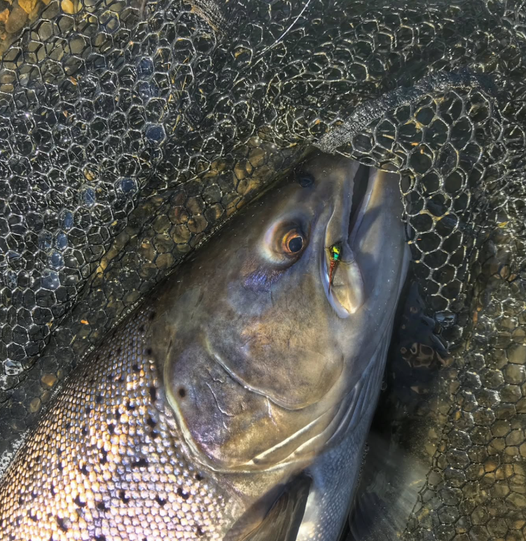
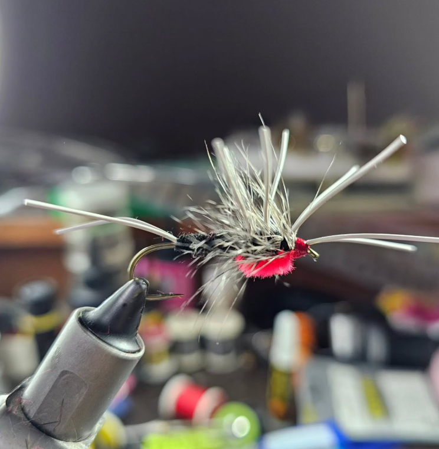

AF Flies
IN FLY FISHING WE TRUST
La pesca con mosca no sólo es pasional, sino que además es difícil de transmitir con palabras. Se puede contar, que es lo que estoy haciendo para ustedes, pero la vivencia es y debe ser personal, siempre. Se podrá sintetizar rápidamente que una mosca es un señuelo artificial fabricado por el propio pescador de manera artesanal, utilizando para ello plumas, pelos e hilos que imitan los insectos naturales que integran la dieta del pez. Pero éste es sólo el principio de un mundo apasionante.

